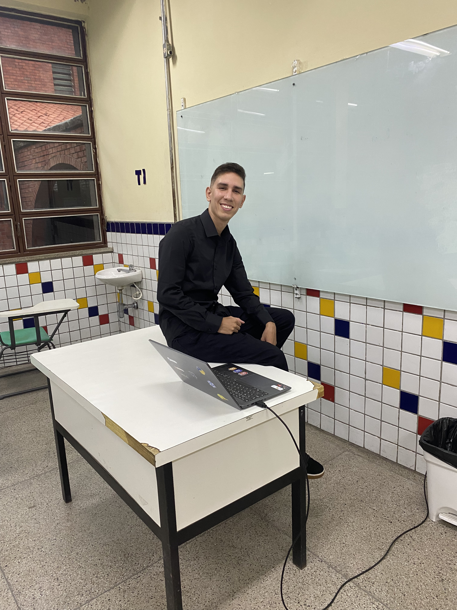
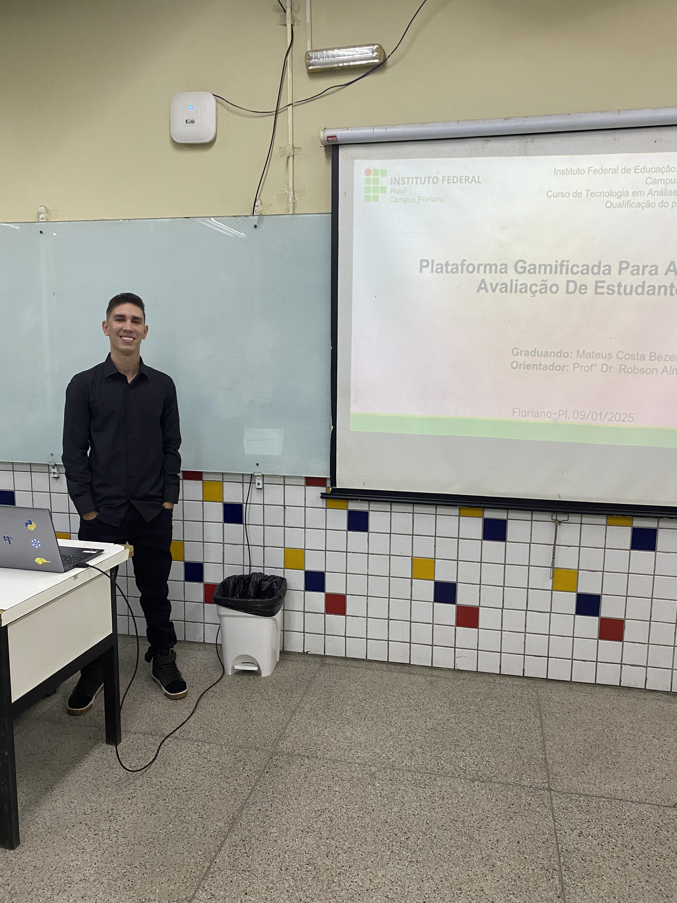
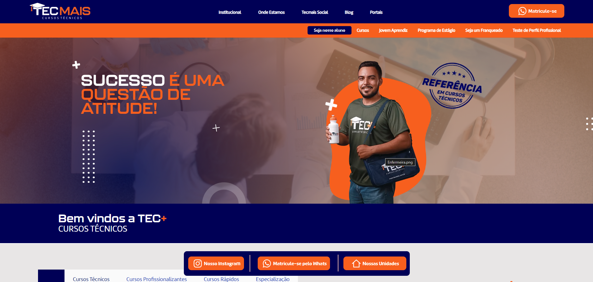
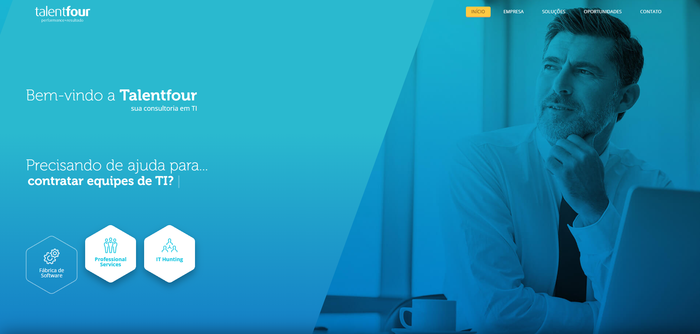
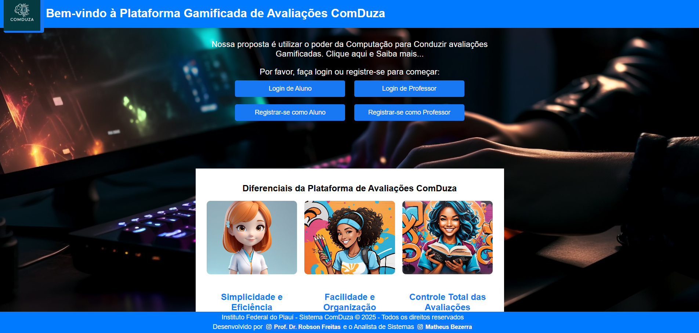

OLÁ, SOU MATEUS COSTA, DESENVOLVEDOR DE SOFTWARE.
Sou desenvolvedor de software apaixonado por tecnologia e inovação, focado na criação de aplicações web modernas e eficientes. No frontend, trabalho com React, Next.js, TypeScript e Tailwind CSS, desenvolvendo interfaces intuitivas, responsivas e de alta performance. No backend, atuo com Node.js, NestJS e APIs REST integradas a bancos de dados como MySQL utilizando Prisma ORM, entregando soluções robustas e escaláveis.
Minha trajetória no desenvolvimento de software é marcada pelo compromisso com qualidade, boas práticas e evolução constante. Cada projeto é uma oportunidade de aplicar minhas habilidades técnicas e criativas para construir soluções eficientes que realmente gerem valor para o usuário e para o negócio. Valorizo trabalho em equipe, comunicação clara, versionamento com Git/GitHub e estou sempre em busca de novos desafios para crescer como desenvolvedor.

MINHAS ESPECIALIDADES.
FRONTEND
Sou especializado no desenvolvimento de interfaces dinâmicas e responsivas com HTML, CSS, JavaScript e TypeScript, utilizando frameworks como React, Next.js e Tailwind CSS. Crio desde páginas institucionais até aplicações web complexas, garantindo uma experiência moderna, intuitiva e agradável ao usuário.
BACKEND
Atuo no desenvolvimento de APIs REST com Node.js e NestJS, integrando bancos de dados MySQL por meio do Prisma ORM. Trabalho com modelagem de dados, autenticação e regras de negócio, garantindo aplicações estáveis, seguras e de fácil manutenção, preparadas para crescer de forma escalável.
INFORMÁTICA
Possuo habilidades abrangentes em informática, incluindo conhecimento sólido em sistemas operacionais, suporte técnico, uso de ferramentas de produtividade e administração de sistemas. Minha experiência me permite adaptar-me facilmente a diferentes ambientes tecnológicos.

MUITO PRAZER, SOU MATEUS COSTA.
Sou desenvolvedor de software com foco em criar aplicações web modernas, eficientes e bem estruturadas. Gosto de trabalhar tanto no frontend quanto no backend: no dia a dia uso React, Next.js, TypeScript e Tailwind CSS para construir interfaces intuitivas e responsivas, e Node.js, NestJS, APIs REST, Prisma ORM e MySQL para dar suporte às regras de negócio e à parte de dados das aplicações.
Sou graduado em Análise e Desenvolvimento de Sistemas e estou sempre buscando evoluir tecnicamente, estudando boas práticas, arquitetura e novas ferramentas do ecossistema JavaScript/TypeScript. Já trabalhei com Python/Django em projetos acadêmicos e pessoais, como a Plataforma ComDuza, e hoje atuo profissionalmente com foco em desenvolvimento web, aprendizado contínuo e entrega de soluções que realmente gerem valor para as pessoas e para o negócio.
MEUS PROJETOS.
EXPERIÊNCIA PROFISSIONAL

TECMAIS FRANCHISING
Cargo: Desenvolvedor Full Stack
Período: Nov/2021 – Mar/2026
Atuo como desenvolvedor full stack na TecMais Franchising, contribuindo na criação e manutenção de soluções web escaláveis para o ecossistema de franquias da empresa. No frontend, utilizo React, Next.js, TypeScript e Tailwind CSS para desenvolver interfaces modernas, performáticas e responsivas. No backend, trabalho com Node.js, NestJS, APIs REST, Prisma ORM e MySQL dando suporte às regras de negócio e aos dados das aplicações.
Tenho foco em implementar experiências de usuário eficientes, acessíveis e alinhadas às necessidades do negócio, integrando dados por meio de APIs RESTful. Trabalho de forma colaborativa com os times de produto e backend para garantir entregas funcionais, estáveis e com qualidade em produção.

TALENT FOUR CONSULTING
Cargo: Desenvolvedor Full Stack
Período: Abr/2026 – Atual
Atuação: Alocado na Qualicorp
Atuo como desenvolvedor full stack pela Talent Four Consulting, alocado em projetos da Qualicorp, contribuindo na criação e manutenção de soluções web corporativas. No frontend, utilizo Vue.js, Vuetify, JavaScript e boas práticas de desenvolvimento para construir interfaces modernas, funcionais e responsivas. No backend, trabalho com Node.js e integração com soluções baseadas em Neo4j, apoiando regras de negócio e fluxos de dados das aplicações.
Tenho foco em implementar funcionalidades eficientes, organizadas e alinhadas às necessidades do cliente, contribuindo com manutenção, evolução de sistemas e integração entre serviços. Trabalho de forma colaborativa com o time para garantir entregas estáveis, escaláveis e com qualidade em ambiente corporativo.
PROJETO EM DESTAQUE

PLATAFORMA COMDUZA
Desenvolvi a Plataforma ComDuza como meu projeto de TCC, em parceria com meu professor orientador. Trata-se de uma plataforma gamificada para avaliação de estudantes, criada com foco em engajamento, acessibilidade e usabilidade no contexto educacional.
O sistema foi desenvolvido com as tecnologias Django, SQLite, HTML, CSS e JavaScript, incluindo funcionalidades como login de usuários, criação de avaliações, correção automática e feedback personalizado.
Em reconhecimento à sua relevância e originalidade, a plataforma foi oficialmente registrada no Instituto Nacional da Propriedade Industrial (INPI) sob o processo BR512025001056-7, como um programa de computador com validade nacional.